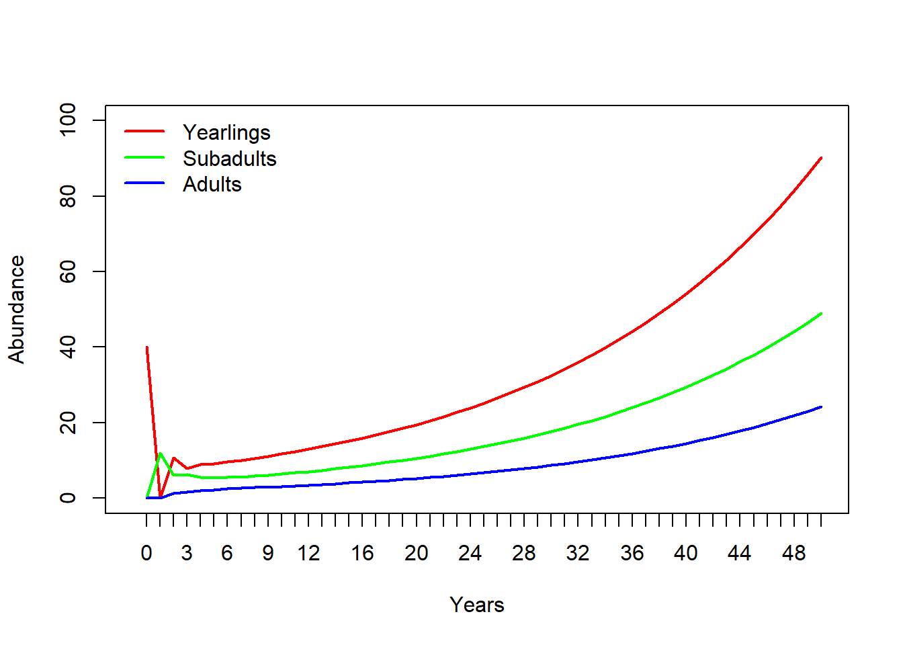

Matrix population models
NRES 470/670
Spring 2024
Matrix population models
First of all, this lecture is full of R code (R makes it easy to run matrix population models!). If you want to follow along in R, you can find the R script here. I recommend right-clicking on the link, saving the script to a designated folder, and loading up the script in RStudio.
Why matrices?
Reason 1: simplify!

You might recognize this InsightMaker model from Lab 3. This represents an age-structured population with only three age classes. Imagine if there were five age classes, or 10? What if you could jump from (e.g.) stage 3 to stage 5? Or from stage 5 back to stage 3? How many lines would you have to draw, how many equations would you have to put in all the different flows? It would be tedious, and you could easily run into errors that would be hard to uncover!

Consider the teasel example from our textbook. It’s possible to implement this model in InsightMaker, but it would be tedious and potentially prone to error. And this is far from the most complicated populations out there (although notice that plants can do some things that vertebrate animals can’t do- for instance go backwards in developmental stage. With matrix models, there is an easier way!

The population vital rates for pretty much any age-structured or stage-structured population can be represented as a transition matrix (or, projection matrix), which summarizes all the information about survival, birth rates, and transitions between stages! (and the fact that a life history like teasel can be represented by a transition matrix illustrates the generality of this concept!)
For example, the teasel vital rates can be summarized in this matrix:
# Teasel example -------------------------------
# Teasel example from Gotelli: summarizing a complex life history!
teasel <- read.csv("teaselmatrix1.csv", header=T) # read in the teasel transition matrix from Gotelli
teasel <- teasel[,-1] # remove the row names
teasel_matrix <- as.matrix(teasel) # convert to a matrix (from a data frame)
colnames(teasel_matrix) <- names(teasel) # assign row and column names
rownames(teasel_matrix) <- names(teasel)
teasel_matrix # print the matrix## seed1 seed2 ros1 ros2 ros3 flowering
## seed1 0.000 0.00 0.000 0.000 0.000 322.380
## seed2 0.966 0.00 0.000 0.000 0.000 0.000
## ros1 0.013 0.01 0.125 0.000 0.000 3.448
## ros2 0.007 0.00 0.125 0.238 0.000 30.170
## ros3 0.008 0.00 0.000 0.245 0.167 0.862
## flowering 0.000 0.00 0.000 0.023 0.750 0.000Stage-structure vs age-structure
In the previous module, we talked about ‘age-structured populations’. What we meant by that is that the population vital rates (e.g., \(b\) and \(d\)) varied by age.
Sometimes, it’s convenient to classify individuals within a certain age range as belonging to a particular life-history stage. For example, we might classify the life history of a grizzly bear like this:
Age 0-1: newborn
Age 1-2: yearling
Age 2-5: subadult
Age 6+: adult
This can simplify our models considerably. For example, consider a species like a sea turtle, with up to 75 or 100 years of life. You could build a model in which you have 100 [Stocks], one for each year of life.
–OR–
You could have 5 [Stocks] representing age ranges over which sea turtles tend to have similar vital rates. For example, we might divide the sea turtle life history into the following stages:
Age 0-1: hatchling
Age 1-5: young juvenile
Age 5-10: older juvenile
Age 10-17: subadult
Age 18+: adult
By using stages, we have simplified our model from having 100 stocks (with even more associated flows/transitions) to a model with only 5 stocks- and we are still accurately representing how vital rates change with age (i.e., the model is still biologically realistic).
Matrix population models can represent age-structured and stage-structured models with equal simplicity and elegance.
The term ‘Leslie Matrix’ refers to an age-structured matrix population model.
When a matrix is used to represent a stage-structured population, it is often called a “Lefkovitch” (or stage-based) Matrix.
Reason 2: modeling age-structured population dynamics!
In one of the questions in Lab 3, you were asked to use a life table to predict the number of births in a population one time step into the future. As you probably realized, this is not as straightforward as it sounds!
Life tables are great for summarizing survivorship schedules and other aspects of age-structured populations. But life tables are not designed to model the abundance dynamics of age- or stage- structured populations!
You know what is great for projecting age-structured abundance into the future?
MATRICES of course!
For example, let’s project a teasel population 1 year into the future:
First of all, we need to begin with a teasel population vector…
# Summarize initial age-structured abundance as a matrix with one column
Initial_teasel <- matrix(c(1000,1500,200,300,600,25),ncol=1) # initial population size (population vector; matrix with 1 column!)
rownames(Initial_teasel) <- rownames(teasel_matrix) # add row and column names
colnames(Initial_teasel) <- "Abundance"
Initial_teasel## Abundance
## seed1 1000
## seed2 1500
## ros1 200
## ros2 300
## ros3 600
## flowering 25Then all we need to do is ‘matrix-multiply’ this vector of abundances by the transition matrix from above! Each time we do this multiplication step, we advance one year! It’s that easy!
NOTE: matrix multiplication (percent-asterisk-percent in R) is not the same as standard multiplication (asterisk in R).
Here’s how we can do this in R!
# Project the population at time 1
Year1 <- teasel_matrix %*% Initial_teasel # note: the '%*%' denotes 'matrix multiplication' in R. We'll go through this more later.
Year1## Abundance
## seed1 8059.50
## seed2 966.00
## ros1 139.20
## ros2 857.65
## ros3 203.25
## flowering 456.90Pretty simple!
To compute teasel abundance in year 2 of our simulation, we can simply repeat:
# Project the population at time 2
thisYear <- Year1
nextYear <- teasel_matrix %*% thisYear
nextYear # now we get the (age structured) population size at time 2! ## Abundance
## seed1 147295.4220
## seed2 7785.4770
## ros1 1707.2247
## ros2 14062.6102
## ros3 702.3908
## flowering 172.1635We could use this strategy to simulate abundance for ten years (or 20, or 30, or 10000)…
Notice the use of a for loop here!
# Use a FOR loop to project the population dynamics for the next 10 years!
nYears <- 10
tenYears <- matrix(0,nrow=6,ncol=nYears+1) # initialize storage array for recording age structured abundances for the next 10 years.
rownames(tenYears) <- rownames(Initial_teasel) # assign row and column names
colnames(tenYears) <- seq(0,10)
tenYears[,1] <- Initial_teasel # initialize the simulated abundances
# run the for loop!
for(t in 2:(nYears+1)){ # here we use 't' as our looping variable, but we could choose any name we want
tenYears[,t] <- teasel_matrix %*% tenYears[,t-1] # perform matrix multiplication for each year of the simulation!
}
tenYears## 0 1 2 3 4 5
## seed1 1000 8059.50 147295.4220 55502.0530 274098.158 1254742.541
## seed2 1500 966.00 7785.4770 142287.3777 53614.983 264778.821
## ros1 200 139.20 1707.2247 2799.7179 5425.969 18197.711
## ros2 300 857.65 14062.6102 9785.5436 28718.972 126857.393
## ros3 600 203.25 702.3908 4889.4070 4390.907 13317.225
## flowering 25 456.90 172.1635 850.2331 3892.123 3953.716
## 6 7 8 9 10
## seed1 1274599.05 4160519.75 12493783.29 19821259.9 54739267.1
## seed2 1212081.29 1231262.68 4019062.08 12068994.7 19147337.1
## ros1 34866.57 77547.56 209719.50 440822.1 1018930.3
## ros2 160533.59 440850.62 1312972.86 2281135.7 5859547.7
## ros3 46750.08 68459.45 186131.95 505712.0 948267.5
## flowering 12905.64 38754.83 61484.15 169797.3 431750.1Finally, we can plot out the abundance of each stage over 10 years!

So projection is easy with matrices! What more reason do we need to convince ourselves of why matrix population models are worth knowing? Well, how about this…
Reason 3: Matrix algebra ‘tricks’!
Fortunately, we can compute two key population properties from the transition matrix using some mathematical tricks:
- We can compute Lambda from the transition matrix in one step
- We can compute **Stable Stage Distribution (SSD) from the transition matrix in one step
Lambda
There is a clear similarity between the finite population growth equation:
\(N_{t+1}=\lambda \cdot N_t\),
where \(N\) is abundance (as always), \(t\) is time, often in years but could be any time units, and \(\lambda\) is the multiplicative growth rate over the time period \(t \rightarrow t+1\)
… and the matrix population growth equation:
\(\mathbf{N}_{t+1} = \mathbf{A} \cdot \mathbf{N}_{t}\),
where \(\mathbf{N}\) is a vector of abundances (abundance for all stages), and \(\mathbf{A}\) is the transition matrix, which we have seen before.
Both equations describe discrete exponential growth or decline!
Note that \(N\) in the first equation is a scalar – that is, it is just a single number.
In contrast:
\(\mathbf{N}\) in the second equation represents an age-structured vector (a bundle of numbers organized in a single line): a set of abundances structured by age or stage class.
Similarly, the finite population growth rate, \(\lambda\) is a scalar,
In fact, the concept of Lambda, or the multiplier used to model discrete population growth, applies to matrix population models as well!
As you may have noticed from our age-structured InsightMaker model from class (or from Lab 3), age-structured models sometimes exhibit “messy” dynamics at first, when the population is jumping up and down a lot. However, after some time, the population growth becomes smooth- this is when the population has achieved stable stage distribution (SSD). At SSD, the population grows in a discrete exponential growth pattern- this rate of exponential growth can be described by a single parameter – Lambda!
\(\mathbf{A}\) is a matrix (a bundle of numbers organized in rows and columns) known as the transition matrix in Population Ecology.
In one step, you can compute \(\lambda\) from \(\mathbf{A}\)!!
Let’s do this in R!
What is the growth rate \(\lambda\) for the teasel population. If you recall, it looked like it was growing, so it should be above 1…
# Matrix "tricks" for population ecology ---------------------------
# Use the transition matrix to compute Lambda, or the finite rate of population growth!
library(popbio) # load the 'popbio' package in R!
Lambda <- lambda(teasel_matrix)
Lambda## [1] 2.32188# as.numeric(round(eigen(teasel_matrix)$values[1],2)) # this is an alternative method- if you don't want to use the 'popbio' packageYou don’t have to understand the math here- but I do want you to understand how simple that was- just one line of code and we computed the annual rate of growth from the teasel transition matrix!
Stable Stage Distribution (SSD)
Here’s another trick:
In one step, you can compute stable stage distribution (SSD) from \(\mathbf{A}\)!!
Let’s do this in R!
What is the stable age distribution for the teasel population. If you recall, the first seed stage looked like it dominated in the figure above.
# Compute stable age distribution from the transition matrix!
library(popbio) # ... and it's even easier if we use the 'popbio' package...
SAD <- stable.stage(teasel_matrix)
SAD # stable age distribution as a percentage of the total population## seed1 seed2 ros1 ros2 ros3 flowering
## 0.636901968 0.264978062 0.012174560 0.069281759 0.012076487 0.004587164# #abs(as.numeric(round(eigen(teasel_matrix)$vectors[,1],3))) # alternative- doesn't use 'popbio'
# SAD/sum(SAD)This vector represents the relative abundances in each age class at the stable age distribution!
Q: Does a stage-structured population grow at the rate of \(\lambda\) per time step if it is NOT at stable stage distribution (SSD)? [Top Hat]
To answer this question, you may find it helps to load an stage-structured model in InsightMaker like this one.
Mechanics of matrix population models
Let’s take a look at a basic stage-structured population – specifically this one - we used this model for running the ‘supplementation’ example in the ‘age structured populations’ lecture. In InsightMaker, it looks something like this:

Let’s convert the vital rates to a three-stage projection matrix. Projection matrices are square matrices where the number of rows and columns are equal to the number of life stages. In this case, that means three! Let’s make a blank matrix for now:
# Demo -------------------------
# In class demo: convert an insightmaker model to a matrix projection model
# First, we specify a blank transition matrix
TMat <- matrix(0,nrow=3,ncol=3) # create a blank matrix with 3 rows and 3 columns
stagenames <- c("Yearlings","Subadults","Adults") # name the rows and columns
rownames(TMat) <- stagenames
colnames(TMat) <- stagenames
TMat # now we have an all-zero transition matrix.## Yearlings Subadults Adults
## Yearlings 0 0 0
## Subadults 0 0 0
## Adults 0 0 0You can read the elements of a transition matrix as follows:
“The per-capita rate of transition from (col name) this year to (row name) next year is (value of element)”
NOTE: the top row in the transition matrix represents fecundities (f). These elements are best interpreted as follows:
“The per-capita production of one-year-olds (yearlings) next year by (col name) in the population this year is (value of element)”.
These matrix elements account for both the birth rate (per-capita birth rate this year) and the survival from birth to age 1. That is, in order for a female to add a new individual to the population next year, she has to give birth and then the offspring need to survive until their first birthday!
In life table terms:
\(f_t = b(t) * g(0)\)
Now we can start filling in this matrix. Let’s begin with the top left element of the matrix (a fecundity term, since it’s part of the top row). This represents the per-capita production of yearlings (col) next year by yearlings (row) this year. What is the value of this element?
Let’s update our transition matrix:
# fill in the top left element of the matrix
TMat[1,1] <- 0 # yearlings have birth rate of zero, so also a fecundity of zero!
TMat## Yearlings Subadults Adults
## Yearlings 0 0 0
## Subadults 0 0 0
## Adults 0 0 0How about the second row, first column. This represents the per-capita transition from yearling (col) this year to subadult (row) next year. That is, the transition rate from yearling to subadult. In this model, this is the same as the yearling survival- because all survivors must transition to the subadult stage (you either transition or die- you can’t stay a yearling for more than one year!) The value from our model is 0.3.
Let’s update our transition matrix:
# update the second row, first column (yearling survival, or transition from ylng to sub)
TMat[2,1] <- 0.3
# and the survival of adults (transition from adult to adult)
TMat[3,3] <- 0.85 # 85% survival
# transition from sub to sub (survive and stay subadult)
TMat[2,2] <- 0.6-0.1 # 50% of subadults survive and stay juvenile
# transition from subadult to adult
TMat[3,2] <- 0.1 # 10% of juveniles survive and transition to adult. What about the transition from the yearling to the adult stage? Well, we can set that to zero because you can’t skip right to adult from yearling- you must pass through the subadult stage!!
# fill in the bottom left element of the matrix
TMat[3,1] <- 0 # yearlings (col 1) can't become adults (row 3) next year!
TMat## Yearlings Subadults Adults
## Yearlings 0.0 0.0 0.00
## Subadults 0.3 0.5 0.00
## Adults 0.0 0.1 0.85What about the transition from the adult to the subadult stage? We can set that to zero as well- because you can’t revert to the subadult stage if you’re already an adult!!
# fill in the bottom left element of the matrix
TMat[2,3] <- 0 # adults (col 3) can't become subadults (row 2) next year!
TMat## Yearlings Subadults Adults
## Yearlings 0.0 0.0 0.00
## Subadults 0.3 0.5 0.00
## Adults 0.0 0.1 0.85And the hardest part is usually the top row: the fecundity row. In this case, this year’s yearlings don’t produce offspring, so they have fecundity of zero.
Subadults have a birth rate of 3 females per female, and adults have a birth rate of 7 female offspring per female.
But remember, in order for these offspring to enter the population as yearlings next year, they must survive that first year of life!!
TMat[1,2] <- 3 * 0.3 # subadult fecundity term: birth rate multiplied by first-year survival
TMat[1,3] <- 7 * 0.3 # subadult fecundity term: birth rate multiplied by first-year survivalIn the end we get the following matrix:
TMat## Yearlings Subadults Adults
## Yearlings 0.0 0.9 2.10
## Subadults 0.3 0.5 0.00
## Adults 0.0 0.1 0.85See if you can understand what this matrix is saying about the transitions from and two the three life stages.
# alternatively, you can fill in the matrix like this:
TMat[,1] <- c(0,0.3,0) # fill in the entire first column of the transition matrix
TMat[,2] <- c(3*0.3,0.5,0.1) # fill in the entire second column of the transition matrix
TMat[,3] <- c(7*0.3,0,0.85) # fill in the entire third column of the transition matrix
TMat## Yearlings Subadults Adults
## Yearlings 0.0 0.9 2.10
## Subadults 0.3 0.5 0.00
## Adults 0.0 0.1 0.85Now we can run a 50-year projection and compare it with the InsightMaker model. It should look the same!!
First we must specify the initial abundances in each stage:
# specify initial abundance vector
InitAbund <- c(40,0,0)
names(InitAbund) <- colnames(TMat)
InitAbund## Yearlings Subadults Adults
## 40 0 0So we are starting with only Juveniles…
# Run the model for 50 years (using for loop)
nYears <- 50
allYears <- matrix(0,nrow=nrow(TMat),ncol=nYears+1)
rownames(allYears) <- rownames(TMat)
colnames(allYears) <- seq(0,nYears)
allYears[,1] <- InitAbund
for(t in 2:(nYears+1)){
allYears[,t] <- TMat %*% allYears[,t-1] # matrix multiplication!
}
allYears## 0 1 2 3 4 5 6 7 8 9
## Yearlings 40 0 10.8 7.92 9.018 9.14850 9.634005 10.086392 10.600134 11.142728
## Subadults 0 12 6.0 6.24 5.496 5.45340 5.471250 5.625827 5.838831 6.099456
## Adults 0 0 1.2 1.62 2.001 2.25045 2.458223 2.636614 2.803705 2.967032
## 10 11 12 13 14 15 16
## Yearlings 11.720277 12.330329 12.974037 13.652323 14.366661 15.118705 15.910307
## Subadults 6.392546 6.712356 7.055277 7.419850 7.805622 8.212809 8.642016
## Adults 3.131923 3.301389 3.477416 3.661332 3.854117 4.056561 4.269358
## 17 18 19 20 21 22 23
## Yearlings 16.743466 17.620318 18.543126 19.51428 20.536315 21.611881 22.74378
## Subadults 9.094100 9.570090 10.071140 10.59851 11.153539 11.737664 12.35240
## Adults 4.493156 4.728593 4.976313 5.23698 5.511284 5.799945 6.10372
## 24 25 26 27 28 29 30
## Yearlings 23.934968 25.188542 26.507772 27.896096 29.357133 30.894691 32.512777
## Subadults 12.999333 13.680157 14.396641 15.150652 15.944155 16.779217 17.658016
## Adults 6.423401 6.759824 7.113866 7.486451 7.878548 8.291181 8.725426
## 31 32 33 34 35 36 37
## Yearlings 34.215609 36.007625 37.89350 39.87814 41.96673 44.16470 46.47780
## Subadults 18.582841 19.556103 20.58034 21.65822 22.79255 23.98629 25.24256
## Adults 9.182414 9.663336 10.16945 10.70206 11.26258 11.85244 12.47321
## 38 39 40 41 42 43 44
## Yearlings 48.91204 51.47377 54.16967 57.00676 59.99245 63.13451 66.44113
## Subadults 26.56462 27.95592 29.42009 30.96095 32.58250 34.28899 36.08485
## Adults 13.12648 13.81397 14.53747 15.29886 16.10012 16.94335 17.83075
## 45 46 47 48 49 50
## Yearlings 69.92094 73.58299 77.43685 81.49254 85.76065 90.25230
## Subadults 37.97476 39.96366 42.05673 44.25942 46.57747 49.01693
## Adults 18.76462 19.74741 20.78166 21.87008 23.01551 24.22093Now let’s plot it out!
# and plot out the results!
plot(1,1,pch="",ylim=c(0,100),xlim=c(0,nYears+1),xlab="Years",ylab="Abundance",xaxt="n")
cols <- rainbow(3)
for(s in 1:3){
points(allYears[s,],col=cols[s],type="l",lwd=2)
}
axis(1,at=seq(1,nYears+1),labels = seq(0,nYears))
legend("topleft",col=cols,lwd=rep(2,3),legend=rownames(allYears),bty="n")
Does this look the same as the InsightMaker results? Check it to make sure!
Limitations of matrix population models
Matrix population models are great, but they have some limitations too.
What about density-dependence?
In some ways, while introducing a new level of realism in our models – age-structure – we have been ignoring another type of realism that we introduced in earlier lectures- density-dependence (both positive and negative)!
Which vital rates are density-dependent? All? Some? It depends? Are the data available?
How do you incorporate density-dependence into a matrix population model?
How do you incorporate predator-prey dynamics into a matrix population model?
ANSWER: use computer programming (e.g., R or InsightMaker!)
Overview of matrix multiplication
(we will do this on the whiteboard!)
In-class exercise: loggerhead conservation!
First, please review the introduction to loggerhead sea turtles here.
Next, download the Excel document for this example here. We will work through the Excel example in class.
NOTE: a worked version of the spreadsheet can be found here
Using your Excel spreadsheet, investigate four management scenarios for the loggerhead turtle population:
- Improve fecundity (both subadults and adults) via nest-site
protection!
- Increase fecundity by 50% (improve to 1.5 times the current
value)
- Increase fecundity by 50% (improve to 1.5 times the current
value)
- Improve hatchling survival via nest monitoring
- Improve to 100%
- Improve to 100%
- Improve large juvenile survival using Turtle Excluder Devices
(TEDs)
- Add 0.25 to the existing large juvenile survival (prob of transition
from LJ to LJ)
- Add 0.25 to the existing large juvenile survival (prob of transition
from LJ to LJ)
- Improve adult survival by restricting longline fisheries.
- Increase by 10% (add 0.1 to adult survival)

Top Hat: Which of the four management recommendations would have the greatest positive effect on this population?
Click this link to download a CSV file of the loggerhead transition matrix (for reading into R): CSV link
translate life history description into matrix population model
If we have time, we may review the final question from Lab 4:
Translate the following paragraph into a matrix population model. Remember a matrix population model has two components- an initial abundance vector and a transition matrix.

We assumed that the tawny rat-hawk life history could be described in terms of four major life stages: juvenile (one-year-olds), subadults (2-year-olds), non-territorial adults, and territorial adults (all individuals 3 years old and beyond are considered adults). We assumed that territorial adult females experienced an average of 10% mortality each year, and non-territorial adults experienced 18% mortality annually. Juvenile female mortality was 25% per year, and subadult mortality was 20%. Hatchlings (newborns) had a 30% chance of surviving their first year of life. We assumed that 90% of surviving subadults would become non-territorial adults, while the remaining 10% would become territorial adults. We assumed that 45% of surviving non-territorial females would successfully transition to the “territorial adult” stage, while 10% of surviving territorial adults would lose their territories, becoming non-territorial adults. Territorial adults are the primary reproductive stage, and produce an average of 2.5 fledged hatchlings each year, half of which are female. Non-territorial adults produce 1.1 new fledged hatchlings each year on average, half of which are female. We ran a female-only matrix population model, and we initialized the population with 800 juveniles, 150 subadults, 75 non-territorial adults and 50 territorial adults.
For more on matrix population models, the bible of this subject is this book by Hal Caswell.
And finally, check this out- this is a database of thousands of stage matrices for plants and animals around the world: